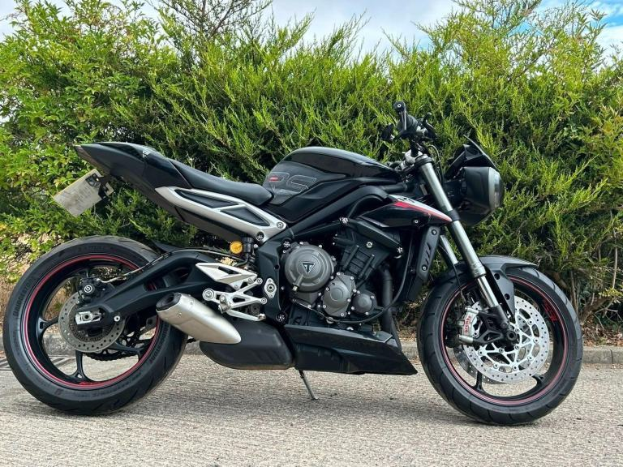

Street Triple RS
2017 Street Triple RS in black, 18,526 miles, £4,999.
Seller: York, North Yorkshire. Contact details are on the original ad.
Key facts
| Price | £4,999 |
|---|---|
| Year | 2017 |
| Miles | 18,526 miles |
| Model | Street Triple RS · Black |
| Location / dealer | York, North Yorkshire |
| Distance from Poole | ≈ 227 miles as the crow flies (straight line from Poole BH15 1AA, estimated from “York, North Yorkshire”) |
| On the lists | All bikes |
| Registration | Not stated in the ad, and I didn’t check the photos for this listing |
| Previous keepers | 3 (ad) |
| Seller type | Trade (ad) |
| Listed | 1 day ago as of 13 Oct 2026 (Gumtree) |
| Gumtree vehicle check | not a write-off, not stolen, not scrapped, not exported, original colour |
| From the ad | “WE HAVE 220 BIKES ON EBAY HOWEVER ON OUR WEBSITE [Website URL removed] OUR FULL STOCKLIST OF 500 + BIKES IS AVAILABLE TO VIEW ONLINE - IF A BIKE DISAPPEARS FROM EBAY IT MAY NOT BE SOLD PLEASE CHECK WEBSITE AS THAT IS UPTO DATE AND WILL STATE ON EACH BIKE IF A DEPOSIT HAS BEEN TAKEN OR SOLD - JRS MOTORCYCLES LTD 2017 17 TRIUMPH STREET TRIPLE RS 765, Naked, 18k miles only, RS model so has the desirable components such…” |
Facts marked (ad) come from the listing. Ask the seller to show you the paperwork.
Why buy it
- The original 765 triple: the same engine family as today’s bikes, for less money
- Check the service history and tyres, as on any older bike
Things to check
- Service history
Ask for stamped or invoiced services, and the date of the last valve check.
- TB262 valve spring retainer
Triumph’s technical bulletin TB262 lists the Street Triple R and RS without giving years, so ask the dealer whether it applies to this engine. It is a workshop bulletin, not a safety recall. Also ask for an outstanding-recall check on the frame number. Source: Triumph TB262 ↗
- Quickshifter
Test both up and down shifts. Owners of the later 2023+ bikes have reported sensor failures. Source: MCN owners’ reviews ↗
History check
Registration: Not stated in the ad, and I didn’t check the photos for this listing
Without a confirmed registration I couldn’t check the DVLA and MOT records. Ask the seller for the registration, then use the GOV.UK MOT history and DVLA vehicle enquiry checks.
2017–19 Street Triple RS
The spec sheet covers the 2020+ models only, so this earlier model isn’t in it.
Sources: Triumph UK – Street Triple 765 spec · Triumph media – 2023 range · Triumph – Moto2 spec · Triumph UK – 765 RX · Triumph media – 2020 RS · MCN – 2020–22 RS review · Motorcycle.com – 2020 RS first ride · Motorcycle.com – 2020 R first look
The verdicts
Seller: York, North Yorkshire. Contact details are on the original ad.